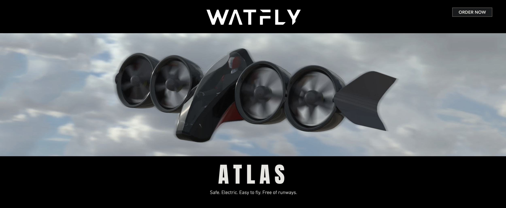
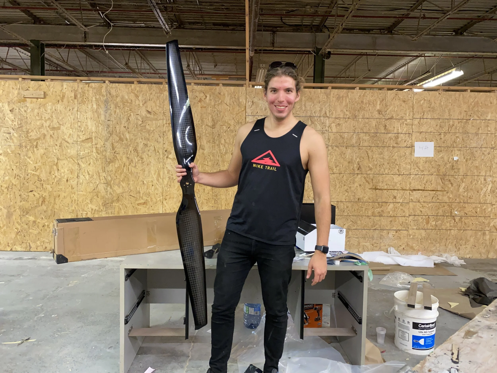
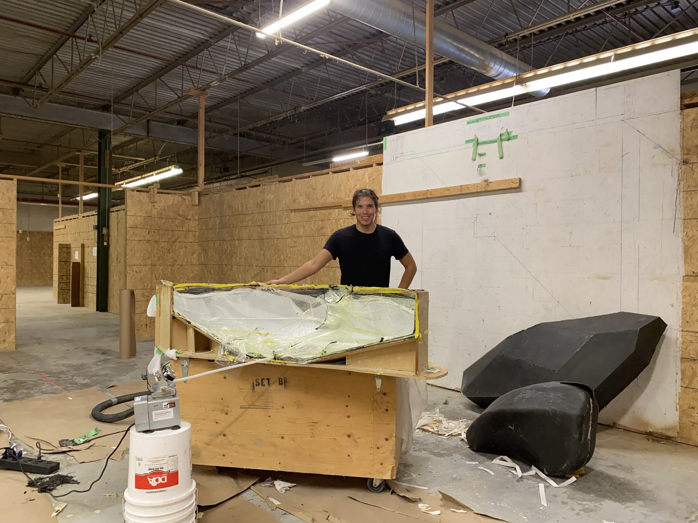
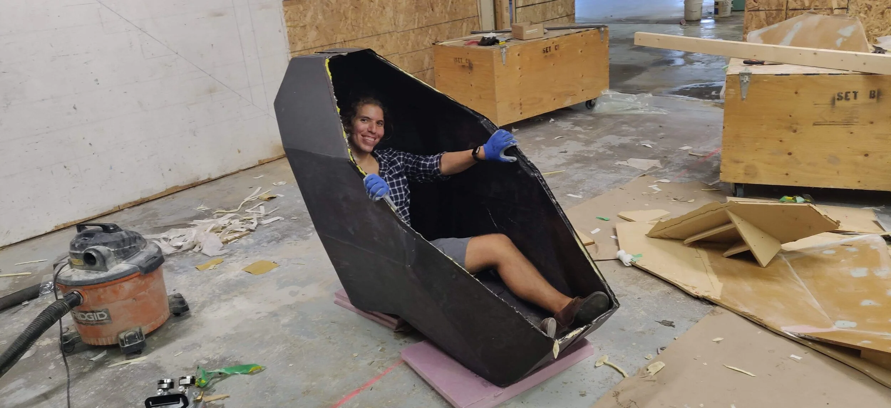
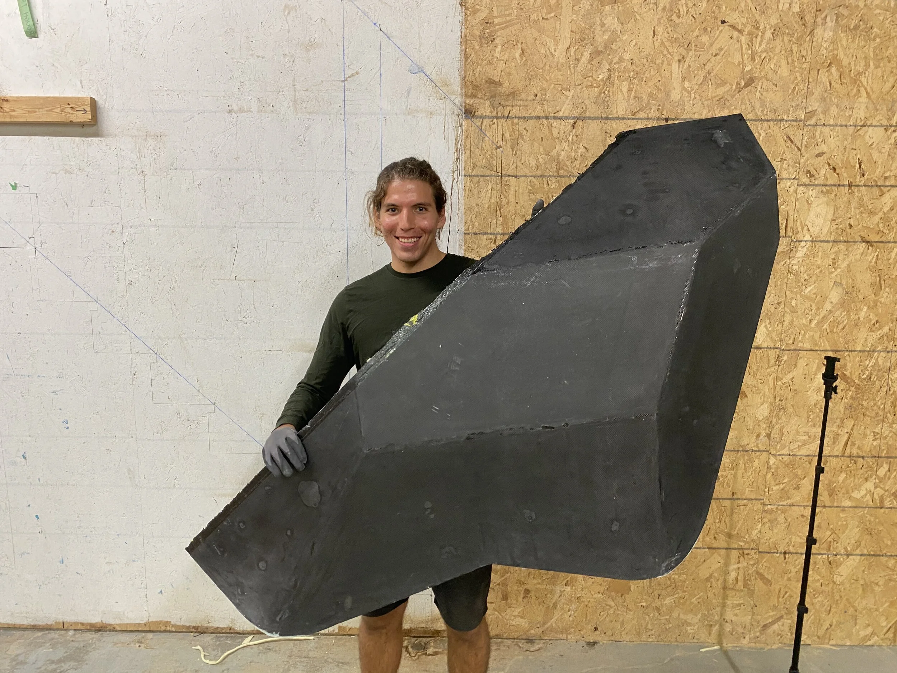

— project thumbnail")
Human Sized Drones (2020)
Atlas: all or nothing
After spending the last 2 years working towards an electric vertical take-off and landing aircraft, diligently validating our technology and gaining traction with investors and customers, the COVID-19 pandemic hit us hard. It was April 2020 and raising funds for a ‘moonshot’ startup seemed impossible, we couldn’t even fly to go fundraise in the Bay Area.
Rather than slowly bleeding out while we wait out the pandemic, I decided to take whatever money we had left in the bank and start the fabrication of the first full-scale prototype aircraft. Full-scale as in, it can carry a person. We would most likely not have enough funds to finish building it, but I thought that if we build in public and post everything on our Instagram, we could generate enough traction to find more customers and investors, so we would find the capital to finish building it half way through the build.
This was risky, had we failed it would have meant the end of the company, but I did not see an option. We did two things: 1. Launched a new website designed around showcasing the progress of the build and encouraging people to place pre-order deposits, and 2. Started designing and building.
Like i said, the plan was to build in public so I have video of the entire build. Rather than posting a movie, here are some GIFs. Same as last time, Watfly is still operating and I am no longer part of the company, so I will not dive too deep into detail.

Let’s skip the design and go straight to fabrication. In order to minimize the cost of tool making as much as possible, we got rid of all curvature on the passenger cell, making it a “dihedral” design (what we’ve come to know as the cool Tesla Cybertruck design). This meant that instead of CNCing tools to a curvature, we could just contour mill MDF panels and screw them together with some ribbing, and so we did. Below you will see us assemble a series of flat panels together, plus doing body-filling to hide any screw caps (we also body filled some light radii because sharp edges can be tricky for composite layups) and the gap lines in between the panels.
 — Left: Body-filling cockpit mould.")
 — Center: Sanding cockpit mould.")
 — Right: Assembling cockpit mould.")
We still had some curvature along the vertical sections of the moulds (what we called the walls) and we formed these curves by placing sheet metal guided by the adjacent MDF panels. After this we sealed all the MDF with epoxy (as previously discussed in my submarine building logs, MDF must be sealed in order to hold vacuum plus not absorb any resin during the layup process). The layer of epoxy was then polished to 1000 grit to maximize the surface finish quality.
We then created templates of the mould using cardboard, we would then use the templates to cut exact carbon fibre shapes that would fit into the mould precisely.
There’re quite a few people working on the moulds at this point, although we were not paying anyone we did manage to get some help: mostly friends and also enthusiasts who had heard about what we were building and wanted to help (we even got a Formula 1 Mercedes engineer to help out with the aerodynamics). Since most of the design was done on remote, we were also able to crowdsource a lot of expertise during the design process, mostly for free.
 — Left: Sealing cockpit mould.")
 — Center: Creating templates of moulds.")
 — Right: Cutting carbon for the cockpit.")
In order to bond the two halves of the passenger cell we would need a flange, but the simple flat MDF panel geometry of the mould meant we would have to add one on top. We formed a flange by heating up a 1/4” strip of polyurethane foam and then wrapping it in tape (to seal it from absorbing resins) and hot glueing it around the edge of the mould as you can see below.
The passenger cell layups were broken into 3 steps: 1. First layer of carbon, 2. Middle layer of foam core (which was a combination of foam panels + poured foam), and 3. Second layer of carbon.
Below you can see the first layer of carbon for both moulds: since we had templates cut to the exact carbon fibre shapes needed for the mould, we would use these to cut the fibres and then went the fibres on a flat surface (way easier to wet on flat than on the mould surface) and then transfer them into the mould. We would then pull vacuum and let it cure (the moulds held vacuum perfectly).
 — Left: Installing mould flanges.")
 — Center: Cockpit layup.")
 — Right: Another cockpit layup.")
The middle step required cutting foam panels to fit the mould plus forming them using heat wherever curvature was required. In areas where more than one foam panel had to be stacked, we glued them using a silica thickened epoxy resin and compressing under vacuum. Any gaps between foam panels were filled by pouring expandable foam and sanding it flush, this to ensure no fibre folds on the next layer of carbon fibre.
 — Left: Fitting foam core on 2nd mould.")
 — Center: Fitting foam core.")
 — Right: 2nd act of layup.")
The third step was another carbon fibre wet layup, with a mirror schedule of the first layup, This included a 2 layer plain weave stack plus uni fibres reinforcing strategic areas. Both halves of the passenger cell where then demoulded and trimmed via a diamond wheel dremmel. The two halves were bonded together via the flange and a thickened high strain epoxy based adhesive.
 — Left: 2nd act of layup, 2nd half.")
 — Center: Cockpit trimming.")
 — Right: Cockpit marriage.")
Once the passenger cell was finished we got to work on the wings and control surfaces. We did maintain the curvature here so the moulds did require more machining time and unfortunately we had to send them to a machine shop out of town so the logistics added cost and lead time. The bigger moulds had to be stacked in multiple sections, which we then had to glue together. The process was similar to that of the passenger cell tool, with hours of sanding and body filling required in each mould before we would seal them and get them ready for the layups.
You’ll see that our manpower started to take a hit, it was the middle of the summer and we were working inside a warehouse that was way too hot for volunteers to actually come and help willingly, but hey, an investor during a visit once told us it showed ‘grit’.
 — Left: Cockpit marriage part 2.")
 — Center: Assembling wing moulds.")
 — Right: Sanding wing moulds.")
This is where things start to get really repetitive. The control surfaces required 8 different layups (4 control surfaces total, 1 layup for each half), and they all looked very similar. Try to spot any differences. These days I would usually do a layup at 7AM, then demould at 6PM and do another layup at 7PM, then repeat for about two weeks.
 — Left: Sanding control surface moulds.")
 — Center: Control surface layup #1.")
 — Right: Control surface layup #2.")
 — Left: Control surface layup #3.")
 — Center: Control surface layup #4.")
 — Right: Control surface layup #5.")
 — Left: Control surface layup #6.")
 — Center: Control surface layup #7.")
 — Right: Control surface layup #8.")
While I was sprinting to finish all the composite layups, the rest of the team was focused on designing and building the two battery packs (one for each wing), adapting the battery charger (we bought a Manzanita charger, the one commonly used in FSAE EV competitions), and sourcing machine parts (motor mounts, wing spars, and landing gear). This way when I was done, it would all start to come together simultaneously.
All of these videos were being posted online and we started to build a social media following, going from 100 followers to over 500 followers quickly as the word started to spread and we even hosted some journalists at our warehouse. Similarly pre-orders started to flood in and the list of interest people grew from a handful, to 3 digits over a short span. We slowly started taking deposits (really not a priority since we did not use the deposit money to build anything, it just sat in a separate bank account) and quickly hit over $1MM worth of pre-orders (at a retail price of $150k per aircraft), but more importantly people were reaching out and showing us how passionate they were about this vehicle. Soon after we closed our first angel cheque from one of the persons who had placed a pre-order, he wanted to be part of taking this to market. This meant that the plan was working, and we immediately put the money to work and bought the rest of the components to finish the build.
 — Left: Control surface demould.")
 — Center: In-borne wing layup.")
 — Right: In-borne wing layup part 2.")
Looking back, having limited financial resources led us to find creative ways to overcome problems. From the dihedral passenger cell, to replacing our custom electric ducted fans (EDF) which were quoted for over $25k a pop for T-Motor U15XXL motors which retailed for $6k (btw those T-Motor motors are awesome, they can produce up to 102kgf thrust each when paired with their propellers).
 — Left: Second in-borne wing layup.")
 — Center: Out-borne wing layup.")
 — Right: Second out-borne wing layup.")
In December 2020, after completing the build of all exterior surfaces, plus sourcing the powertrain, batteries, chargers, and machined parts, I left the company to pursue other interests. I’m incredibly proud for all that Watfly accomplished in 3 years: going from a student team to a company that builds aircraft. Later this year when Atlas takes flight, it will become one of the first hundred electric aircraft in history, and I foresee Watfly will be one of the first companies in the world to commercialize an EVTOL vehicle. What a ride.



